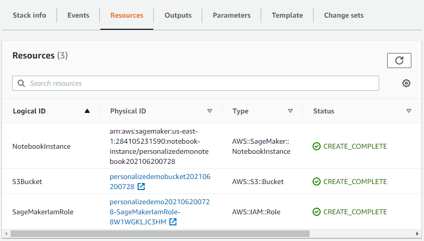
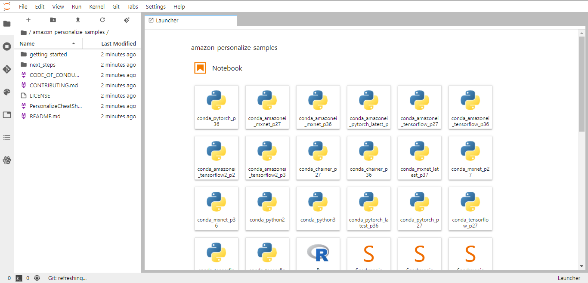

In this workshop you will build your very own recommendation model that will recommend movies to users based on their past preferences. You will further improve the recommendation model to take into account a user's interactions with movie items to provide accurate recommendations. This workshop will use the publicly available movie lens dataset.
Amazon Personalize is an advanced tool for building recommender systems, that supports AutoML and Real-time.
Use this template for the setup.
These are the 3 resources that will be created.

Go to SageMaker → Notebooks and Open the Jupyter Lab.
You will see something like this:

This notebook will walk you through the steps to build a recommendation model for movies based on data collected from the movielens data set. The goal is to recommend movies that are relevant based on a particular user. The data is coming from the MovieLens project.
Go to this notebook for in-depth guideline.
Now that we successfully built and deployed a recommendation model using deep learning with Amazon Personalize, the following notebook will expand on that and will walk you through adding the ability to react to the real-time behavior of users. If their intent changes while browsing a movie, you will see revised recommendations based on that behavior. It will also showcase demo code for simulating user behavior selecting movies before the recommendations are returned.
Go to this notebook for in-depth guideline.
We are using a pre-made dataset that hasn't been encrypted so there is no need to decrypt this dataset. However, it would be a good security practice to store your datasets encrypted.
Refer to this notebook for in-depth guideline.
This notebook demonstrate the process of deleting the resources that we created during campaign.
Once you have completed all of the work in the Notebooks and have completed the cleanup steps there as well, the last thing to do is to delete the stack you created with CloudFormation. To do that, go to CloudFormation and delete the stack. This will automatically delete the 3 resources that we created in the beginning.
Congratulations!